Assignment 3 - Computer-aided design and 3D printing
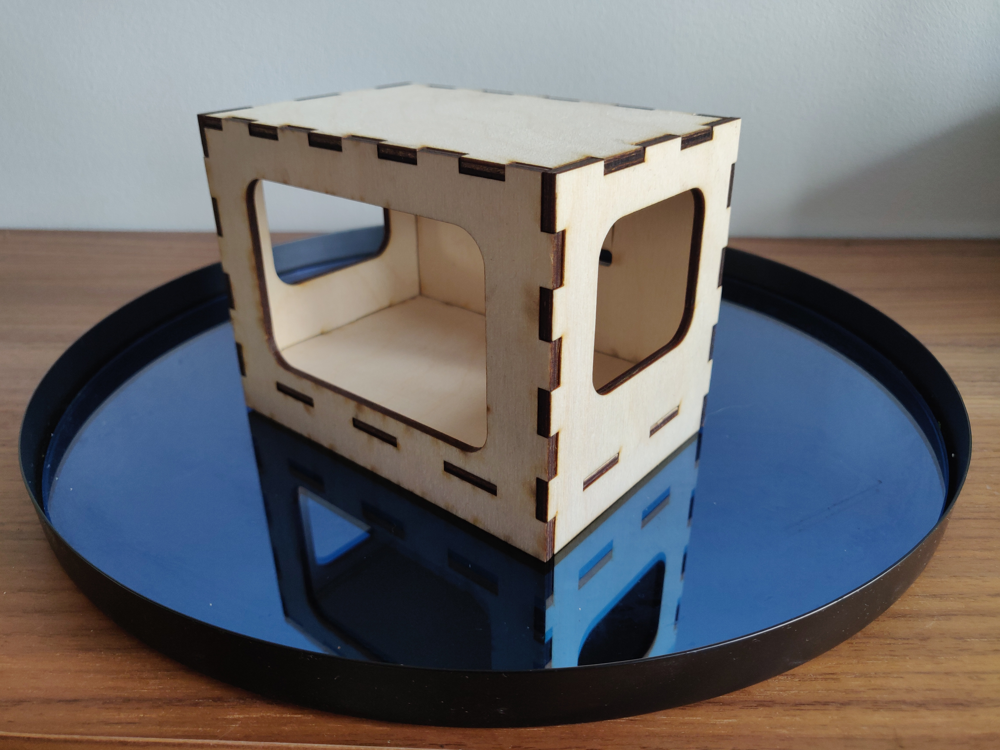Description
1. Use a design software to make something that could not be made subtractively,
and 3D print your design (Max 4 hour printing / 100g material)
2. 3D scan something with 3D photogrammetry
3. Document the process and upload your design files
Define the problem.
I needed to design a shell over a robotic chassis and calculate for components.
The shell had to many details and the complexity is to great for substractive progress

I started by sketching on paper and measure all relevant dimensions.


I started my CAD-scetch using SolidWorks
I started with basic outlines.
It was important that I would create the sketch with accurate dimensions, so it would fit right on the chassis.
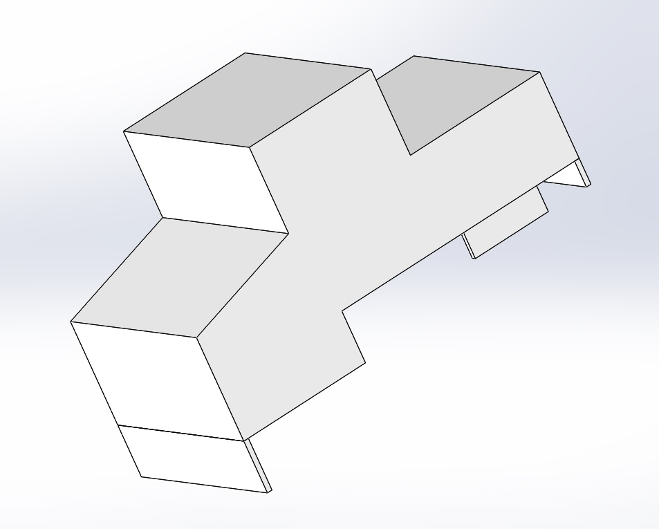Then I used fillet to smoothen all edges.
I also added some details to make it look more like a car. For excample I added headlights
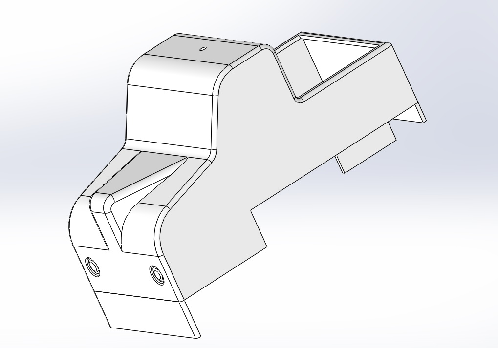Then I made the design hollow with the shell tool.
Here it was important to select the correct surfaces for the shell to fit right on top of the chassis and allow for components. The shell thickness was 3mm.
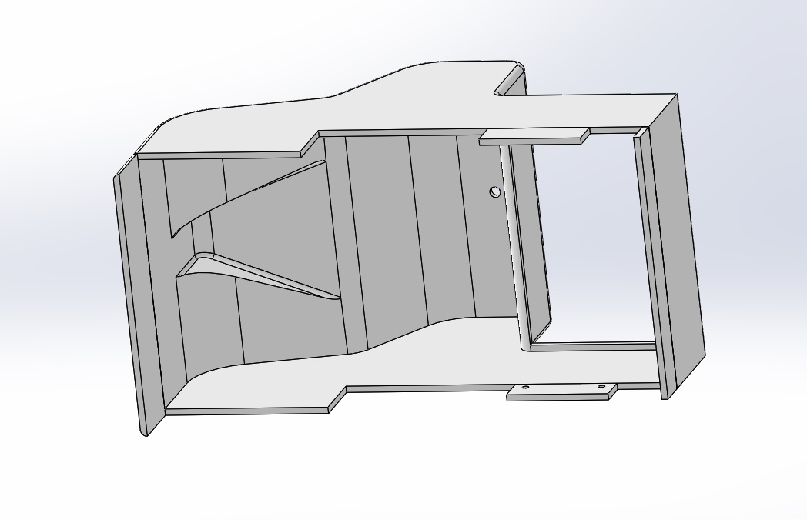Prepare the design for the 3D printer.
Because I needed the design to be in specific size I had to print it in full size as a created it in SolidWorks. For it to fit into the 3D printer I had to cut it up in 4 pieces and I could 3D print 2 pieces at a time. Here you can see the right side of the shell in two pieces.
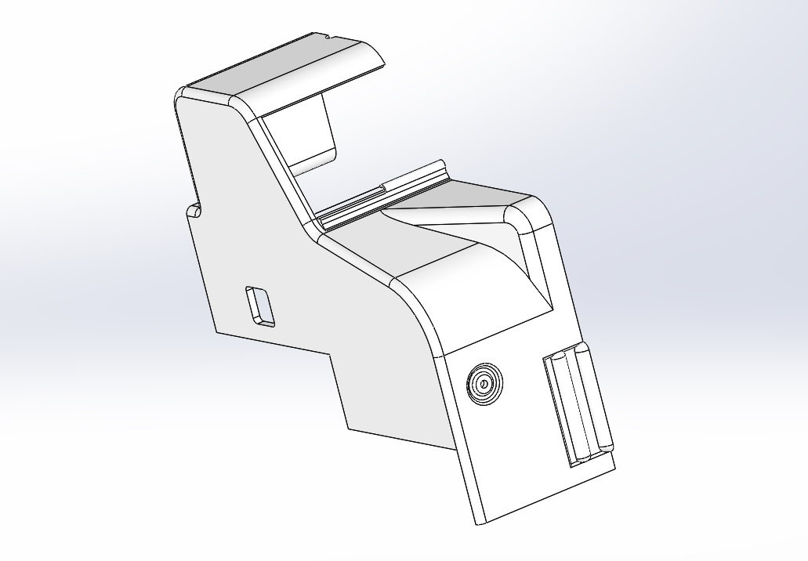 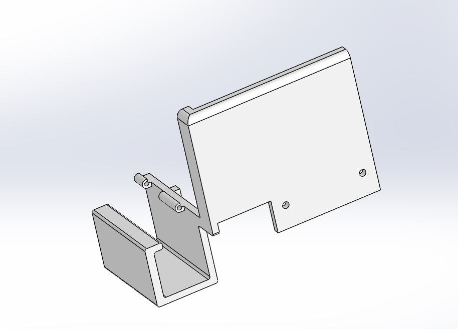I then printed it in Ultimaker 3 - 3D printer.
I used Cura to finish the preparations and adjust the right settings for the 3D printer.


Assembly.
Here I used super-glue to put it together and bolts to make the edges of the pieces align correctly.
What I learned from the print is that when you 3D print holes the diameter decreases. I used drill to
make them the correct size. I also learned that it is always faster to print/build directly upwards
when 3D printing so I have that in mind now when I make 3D designs.

Spray painted, with white spray for plastic.
I used sandpaper to make the surface more smooth before I spray painted it.
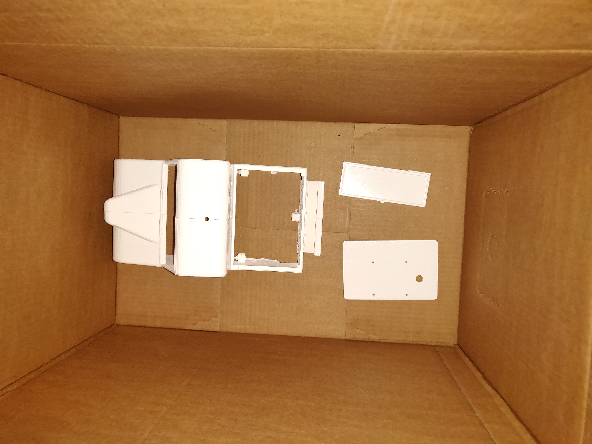Installation.

I then sketched a patern for the shell and painted it on.


Part 2 - 3D scan .
I wanted to 3D scan the whole car that I had created the shell for. I started by taking 30 photos of the car from diffrent angles.
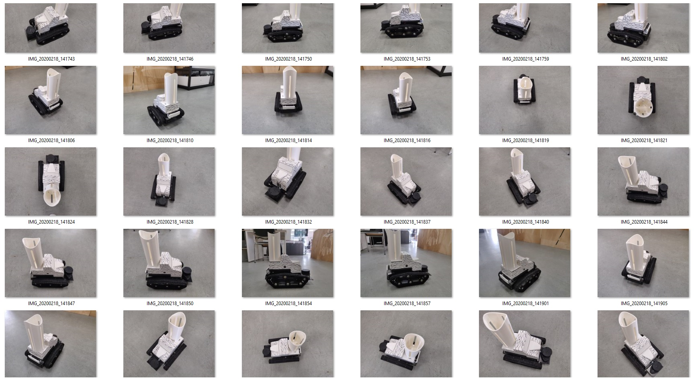Create the 3D model of the object from the photos.
I used AutoDesk ReCap Photo to create the 3D model from the photos.
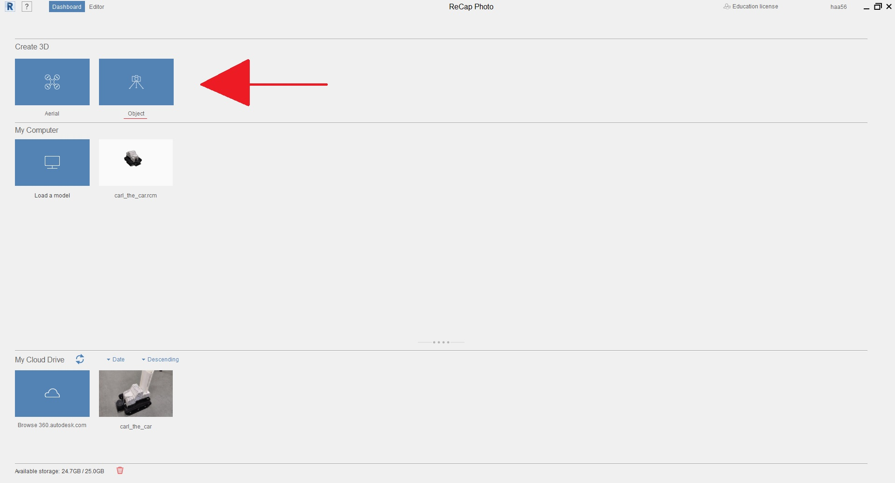 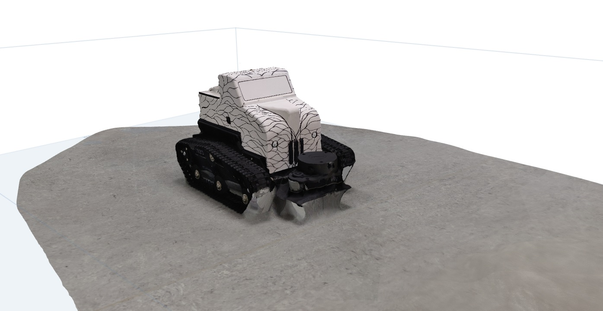Then I edited the model using tools in AutoDesk ReCap.
I cut the base off and deleted from the model. Then I made all surface more even and cut out all smaller details that where not supposed to be there. I learned that your model will not be 100% accurate and that you have to take a lots of photos, with a good camera, to increase accuracy. However I was reasonably happy with the outcome as I didn't need it to be more accurate.
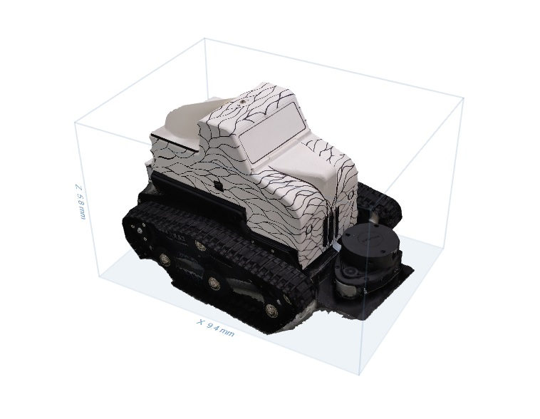 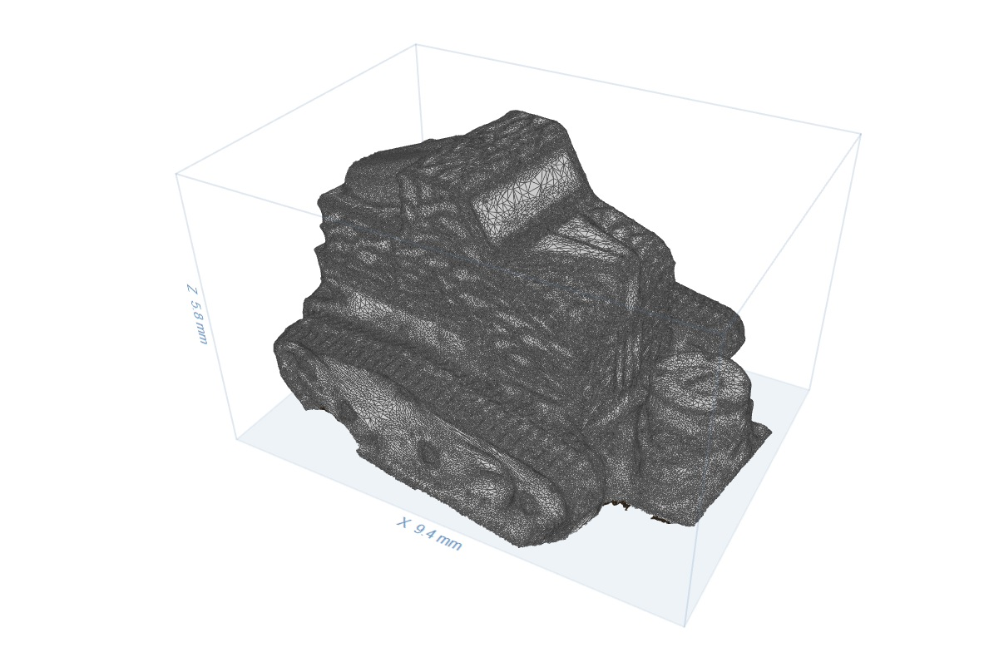Export as .stl file
I had to make .stl file from the model to be able to open it in Cura and prepare it for the Ultimaker 3- 3D printer.
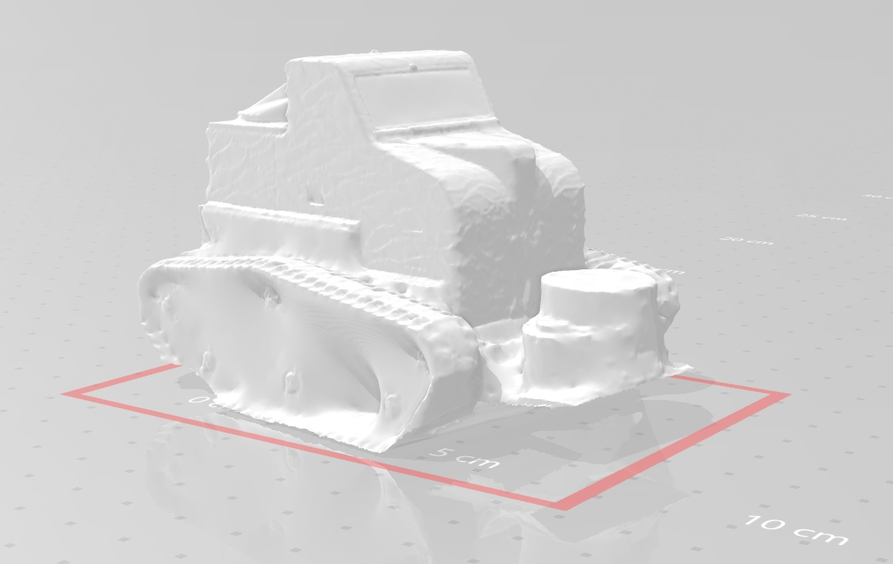... and now I have a miniature model of the car that I built with my team.